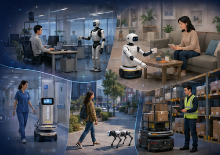

1
Scalable data from people
Interaction data at scale and quality, respecting privacy, consent, and effort.
hc-robot-learning 2026
Toward Reliable and Scalable Autonomy in Human Environments

Robot learning has made rapid progress on isolated capabilities such as dexterous manipulation, locomotion, navigation, physical reasoning, and increasingly general vision-language-action models. Yet a central premise of real-world deployment is that robots must operate in human environments and around humans: homes, hospitals, offices, warehouses, and public spaces in which people are not only end-users, but also collaborators, supervisors, demonstrators, and bystanders. These humans may introduce ambiguous instructions, changing preferences, social expectations, physical constraints, and safety-critical interruptions that current robot learning systems rarely handle in a reliable and scalable way. Translating today's lab-scale demonstrations into real-world systems that are reliable enough to be trusted, and scalable enough to be deployed across diverse users, tasks, and settings, remains an open challenge that cuts across policy learning, perception, interaction, adaptation, and safety.
Interaction data at scale and quality, respecting privacy, consent, and effort.
Benchmarks for safety, social appropriateness, and recovery with a human in the loop.
Grounding VLA models in physical contact, social norms, and human attention.
Stable policies under clutter, interruptions, ambiguity, and untrained users.
Turn-taking, intent inference, and repair over minutes-to-hours of shared activity.
Learning online from preferences and corrections without forgetting or unsafe exploration.
EPFL
Full Professor at EPFL, where she heads the Learning Algorithms and Systems Laboratory (LASA). A pioneer of robot learning from demonstration, she develops methods that let robots acquire dexterous manipulation and reactive control skills from human guidance and adapt them safely during close physical interaction with people.
National University of Singapore
Associate Professor at the National University of Singapore, where he leads the Collaborative, Learning, and Adaptive Robots (CLeAR) group. His work builds trustworthy interactive robots, spanning trust-aware human-robot interaction, tactile perception, and learning robot policies from human supervision and feedback.
Massachusetts Institute of Technology
Assistant Professor at MIT (AeroAstro and CSAIL). Her research studies how robots can learn the right representations of human intent, combining robot learning, algorithmic human-robot interaction, and learning from human feedback to keep autonomous systems aligned with people's preferences.
Disney Research Zurich
Lab Director for Robotics at Disney Research Zurich. He bridges computational design, differentiable simulation, and learning-based control to create believable robotic characters that move expressively and operate safely alongside people.
Opening & live challenge poll
Invited talks, clustered
Four 20-min talks + Q&A in two themed clusters with cross-talk.
Poster & live-demo session
Fishbowl discussion
Contributed spotlight talks
Closing synthesis & roadmap
Extended abstracts up to 4 pages (excl. references) in the CoRL format, via OpenReview (single-blind). Non-archival. All accepted papers are presented as posters; 3–4 are selected for spotlight talks. We welcome in-progress work, negative results, system and demo papers, and cross-disciplinary contributions.
Georgia Institute of Technology
Stanford University
Tsinghua University
Texas A&M University
University of California, Riverside
Carnegie Mellon University
Stanford University

Toyota InfoTech Labs
Toyota InfoTech Labs
Toyota InfoTech Labs
Flexion Robotics